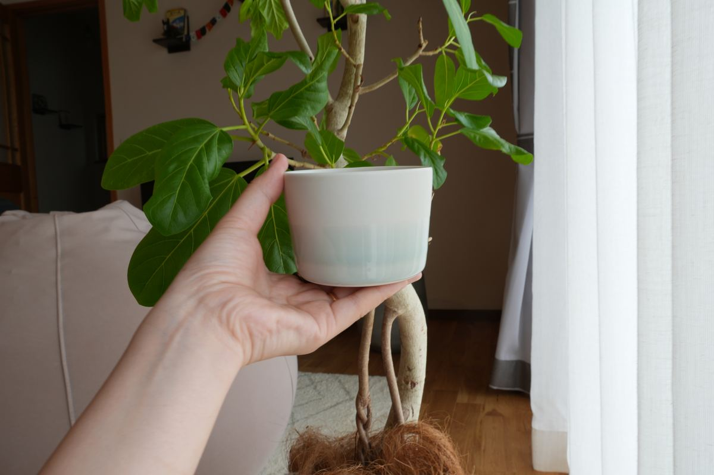

石本藤雄さんのこと
石本藤雄さんは、1941年に愛媛県砥部町で生まれたデザイナー・陶芸家です。1974年から2006年まで、フィンランドのマリメッコで数多くのテキスタイルをデザインし、1989年からはアラビアの製陶所で陶芸にも取り組みました。2020年に、およそ半世紀ぶりに故郷の愛媛へ戻っています。
Mustakivi というブランド
Mustakivi(ムスタキビ)は、石本さんが故郷・愛媛で手がけるブランドです。北欧で培われたデザインと、愛媛の手仕事が出会って生まれる器や布が、暮らしをそっと彩ります。
淡い海色のフリーカップ
白い器の下のほうに、淡い海の色がふわりとにじむフリーカップ。お茶やコーヒーはもちろん、アイスやデザートを盛っても。この器は、一度どなたかの手を経た used の器です。
